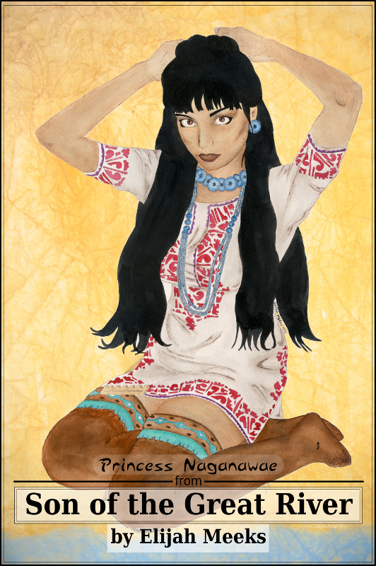
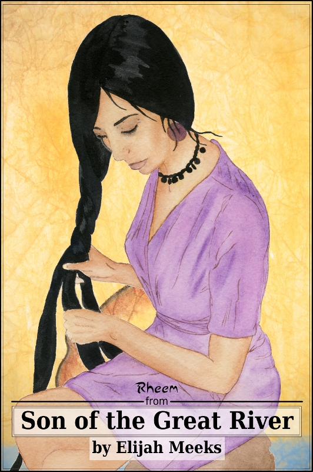

Princess Naganawae from Son of the Great River

Rheem from Son of the Great River
Both of these posters are available through the Seven Lions Store, and complementary posters are available for bookstores carrying Son of the Great River.
This entry was posted on Friday, April 17th, 2009 at 1:59 PM and is filed under Art, Son of the Great River. You can follow any responses to this entry through the RSS 2.0 feed. Both comments and pings are currently closed.